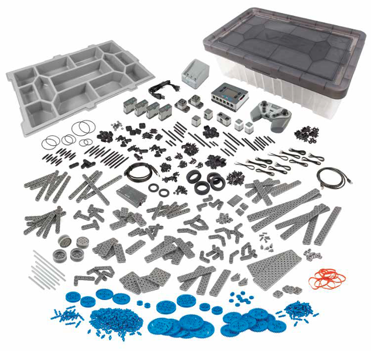

让我们开始吧！
（Let's Get Started）
schedule45-90 分钟
stars初级（Beginner）
face3-5 年级
一. VEX IQ 硬件

VEX IQ 硬件简单、有趣、灵活、易于使用，非常适合用来探索 STEM。同学们脑中的任何创意，都可以尝试使用 VEX IQ 硬件构建出来。可构建非动力模型、动力机构、机器人等。
二. 结构组件（Structural Parts）
（名称 - 尺寸 - 颜色 - 个数）
1.1. 板型颗粒（Plate）
 角板 - 1x2/2x2 - 白 - 2x
角板 - 1x2/2x2 - 白 - 2x 板 - 1x2 - 白 - 6x
板 - 1x2 - 白 - 6x 板 - 1x4 - 白 - 4x
板 - 1x4 - 白 - 4x 板 - 1x6 - 白 - 4x
板 - 1x6 - 白 - 4x 板 - 2x16 - 黑 - 2x
板 - 2x16 - 黑 - 2x 框架板 - 4x4 - 灰 - 2x
框架板 - 4x4 - 灰 - 2x 弧形板 - 1x4x2/3 - 蔚蓝 - 2x
弧形板 - 1x4x2/3 - 蔚蓝 - 2x 圆板 - 4x4 - 蔚蓝 - 2x
圆板 - 4x4 - 蔚蓝 - 2x1.1. 板型颗粒（Plate）
 板 - 4x6/4 - 柠檬绿 - 2x
板 - 4x6/4 - 柠檬绿 - 2x 洞板 - 2x8 - 亮绿 - 2x
洞板 - 2x8 - 亮绿 - 2x 洞板 - 2x4 - 亮橘 - 4x
洞板 - 2x4 - 亮橘 - 4x 洞板 - 2x6 - 亮橘 - 4x
洞板 - 2x6 - 亮橘 - 4x 洞板 - 2x3 - 灰 - 1x
洞板 - 2x3 - 灰 - 1x 圆板 - 2x2 - 亮绿 - 2x
圆板 - 2x2 - 亮绿 - 2x 防滑板 - 2x2 - 黑 - 6x
防滑板 - 2x2 - 黑 - 6x 单口镶嵌圆板 - 2x2 - 白 - 2x
单口镶嵌圆板 - 2x2 - 白 - 2x 带洞圆板 - 2x2 - 深灰 - 2x
带洞圆板 - 2x2 - 深灰 - 2x1.2. 砖型颗粒（Brick）
 砖 - 1x2 - 蔚蓝 - 6x
砖 - 1x2 - 蔚蓝 - 6x 砖 - 2x2 - 蔚蓝 - 2x
砖 - 2x2 - 蔚蓝 - 2x 砖 - 1x4 - 蔚蓝 - 2x
砖 - 1x4 - 蔚蓝 - 2x 砖 - 2x4 - 蔚蓝 - 2x
砖 - 2x4 - 蔚蓝 - 2x 砖 - 2x4 - 亮橘 - 4x
砖 - 2x4 - 亮橘 - 4x 屋顶砖 - 1x2/45° - 黑 - 2x
屋顶砖 - 1x2/45° - 黑 - 2x 屋顶砖 - 1x2x2 - 灰 - 4x
屋顶砖 - 1x2x2 - 灰 - 4x 弧形砖 - 1x6 - 透明浅蓝 - 2x
弧形砖 - 1x6 - 透明浅蓝 - 2x 屋顶砖 - 1x2/45° - 柠檬绿 - 4x
屋顶砖 - 1x2/45° - 柠檬绿 - 4x 倒屋顶砖 - 1x3/25° - 柠檬绿 - 4x
倒屋顶砖 - 1x3/25° - 柠檬绿 - 4x 弧形砖 - 1x3 - 柠檬绿 - 2x
弧形砖 - 1x3 - 柠檬绿 - 2x 弧形砖 - 1x6 - 柠檬绿 - 4x
弧形砖 - 1x6 - 柠檬绿 - 4x1.2. 砖型颗粒（Brick）
 屋顶砖 - 1x2x2/3 - 亮橘 - 4x
屋顶砖 - 1x2x2/3 - 亮橘 - 4x 倒屋顶砖 - 1x2/45° - 亮橘 - 4x
倒屋顶砖 - 1x2/45° - 亮橘 - 4x 屋顶砖 - 1x3/25° - 亮橘 - 4x
屋顶砖 - 1x3/25° - 亮橘 - 4x 衔接口砖 - 1x2 - 灰 - 4x
衔接口砖 - 1x2 - 灰 - 4x 单边球砖 - 2x2 - 深灰 - 2x
单边球砖 - 2x2 - 深灰 - 2x 双边球砖 - 2x2 - 黑 - 1x
双边球砖 - 2x2 - 黑 - 1x1.3. 瓦片颗粒（Tile）
 瓦片 - 1x8 - 灰 - 4x
瓦片 - 1x8 - 灰 - 4x 瓦片 - 1x2 - 蔚蓝 - 2x
瓦片 - 1x2 - 蔚蓝 - 2x1.4. 梁（Beam）
 梁 - 7 modules - 亮绿 - 2x
梁 - 7 modules - 亮绿 - 2x 角梁 - 3x5 modules - 亮绿 - 2x
角梁 - 3x5 modules - 亮绿 - 2x 镶嵌梁 - 1x4 - 柠檬绿 - 4x
镶嵌梁 - 1x4 - 柠檬绿 - 4x 镶嵌梁 - 1x8 - 柠檬绿 - 2x
镶嵌梁 - 1x8 - 柠檬绿 - 2x 镶嵌梁 - 1x2 - 柠檬绿 - 4x
镶嵌梁 - 1x2 - 柠檬绿 - 4x 梁盘 - 2 模块 - 黑 - 4x
梁盘 - 2 模块 - 黑 - 4x 十字口镶嵌梁 - 1x2 - 深灰 - 4x
十字口镶嵌梁 - 1x2 - 深灰 - 4x 十字口梁 - 2 modules - 黑 - 2x
十字口梁 - 2 modules - 黑 - 2x二. 连接组件（Connecting Parts）
（名称 - 尺寸 - 颜色 - 个数）
2.1. 连接组件（Connecting Parts）
 角膜1 - 0° - 白 - 2x
角膜1 - 0° - 白 - 2x 角膜3 - 157.5° - 蔚蓝 - 2x
角膜3 - 157.5° - 蔚蓝 - 2x 角膜4 - 135° - 柠檬绿 - 2x
角膜4 - 135° - 柠檬绿 - 2x 套管 - 1 模块 - 灰 - 4x
套管 - 1 模块 - 灰 - 4x 轴延长器套管 - 2 模块 - 灰 - 2x
轴延长器套管 - 2 模块 - 灰 - 2x 滑轮套管 - 1/2 模块 - 黄 - 4x
滑轮套管 - 1/2 模块 - 黄 - 4x 带摩擦连接销 - 2 模块 - 黑 - 8x
带摩擦连接销 - 2 模块 - 黑 - 8x 无摩擦轴连接销 - 1 模块 - 米黄 - 4x
无摩擦轴连接销 - 1 模块 - 米黄 - 4x 管子 - 2 模块 - 亮绿 - 2x
管子 - 2 模块 - 亮绿 - 2x 十字口球 - 亮橘 - 4x
十字口球 - 亮橘 - 4x 卷线轴 - 深灰 - 1x
卷线轴 - 深灰 - 1x 绳子 - 50cm - 黑 - 1x
绳子 - 50cm - 黑 - 1x 链条 - 16 模块 - 深灰 - 2x
链条 - 16 模块 - 深灰 - 2x 转盘底部 - 4x4 - 黑 - 1x
转盘底部 - 4x4 - 黑 - 1x三. 移动组件（Movement Parts）
（名称 - 尺寸 - 颜色 - 个数）
3.1. 齿轮（Gear）
 齿轮 - 8 齿 - 深灰 - 4x
齿轮 - 8 齿 - 深灰 - 4x 齿轮 - 24 齿 - 深灰 - 2x
齿轮 - 24 齿 - 深灰 - 2x 双锥齿轮 - 12 齿 - 黑 - 2x
双锥齿轮 - 12 齿 - 黑 - 2x 双锥齿轮 - 20 齿 - 黑 - 2x
双锥齿轮 - 20 齿 - 黑 - 2x 锥齿轮 - 20 齿 - 米黄 - 2x
锥齿轮 - 20 齿 - 米黄 - 2x 螺旋齿轮 - 灰 - 1x
螺旋齿轮 - 灰 - 1x 齿轮条 - 10 齿 - 白 - 4x
齿轮条 - 10 齿 - 白 - 4x3.2. 滑轮（Pulley）
 双槽滑轮 - 18x14mm - 白 - 6x
双槽滑轮 - 18x14mm - 白 - 6x3.3. 轮胎（Tire）
 轮胎 - 30.4x4mm - 黑 - 2x
轮胎 - 30.4x4mm - 黑 - 2x 轮胎 - 30.4x14mm - 黑 - 4x
轮胎 - 30.4x14mm - 黑 - 4x 轮胎 - 37x18mm - 黑 - 2x
轮胎 - 37x18mm - 黑 - 2x3.4. 轮轴（Axle）
 轮轴 - 2 模块 - 红 - 4x
轮轴 - 2 模块 - 红 - 4x 轮轴 - 3 模块 - 灰 - 4x
轮轴 - 3 模块 - 灰 - 4x 轮轴 - 6 模块 - 黑 - 2x
轮轴 - 6 模块 - 黑 - 2x 轮轴 - 7 模块 - 灰 - 2x
轮轴 - 7 模块 - 灰 - 2x 轮轴 - 10 模块 - 黑 - 2x
轮轴 - 10 模块 - 黑 - 2x 带帽轮轴 - 4 模块 - 深灰 - 4x
带帽轮轴 - 4 模块 - 深灰 - 4x 带栓轮轴 - 3 模块 - 黑 - 2x
带栓轮轴 - 3 模块 - 黑 - 2x3.5. 其他（Other）
 皮筋 - 24mm - 红 - 2x
皮筋 - 24mm - 红 - 2x 皮筋 - 33mm - 黄 - 2x
皮筋 - 33mm - 黄 - 2x 滑雪板 - 亮橘 - 2x
滑雪板 - 亮橘 - 2x四. 装饰组件（Decorative Parts）
（名称 - 尺寸 - 颜色 - 个数）
4.1. 装饰组件（Decorative Parts）
 天线 - 白 - 2x
天线 - 白 - 2x 圆眼 - 2x2 - 白 - 2x
圆眼 - 2x2 - 白 - 2x 叶子 - 2x2 - 亮绿 - 1x
叶子 - 2x2 - 亮绿 - 1x 花 - 2x2 - 红 - 1x
花 - 2x2 - 红 - 1x五. 电子组件（Electronic Parts）
（名称 - 颜色 - 个数）
5.1. 电子组件（Electronic Parts）
 智能集线器 - 白 - 1x
智能集线器 - 白 - 1x 中型电机 - 白 - 1x
中型电机 - 白 - 1x 运动传感器 - 白 - 1x
运动传感器 - 白 - 1x 倾斜传感器 - 白 - 1x
倾斜传感器 - 白 - 1x六. 拆卸工具（Brick Separator）
（名称 - 颜色 - 个数）
6.1. 拆卸工具（Brick Separator）
 拆卸板 - 橘 - 1x
拆卸板 - 橘 - 1x